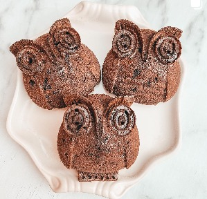

Lechuzas De Chocolate

INGREDIENTES
- 2 Huevos
- 1/4 de aceite
- 1/2 de leche
- Extracto de vainilla a gusto
- 1 cda. de stevia en polvo
- 1 taza de harina de almendras
- 1/3 taza de cacao amargo en polvo
- 1 cda. de polvo de hornear
- 3 barritas de chocolate picado
PARA DECORAR
- Dulce de leche sin azucar
Una vez que hicieron todo, enviar a horno precalentado por unos 20 minutos a 180-190 grados.
PROCEDIMIENTO
- Juntan los huevos con el aceite, el azúcar y la vainilla.
- Mezclan bien hasta integrar todo.
- Agregan mitad de la leche y mezclan.
- Luego agregar la harina y el cacao. De a poquito van agregando el resto de la leche. (No tiene que quedar ni muy líquido ni muy espeso).
- Cortan el chocolate en trozos y se lo agregan a la mezcla.
- Colocar la mezcla en moldes y llevarlo a horno precalentado a 190 grados por unos 30 minutos.